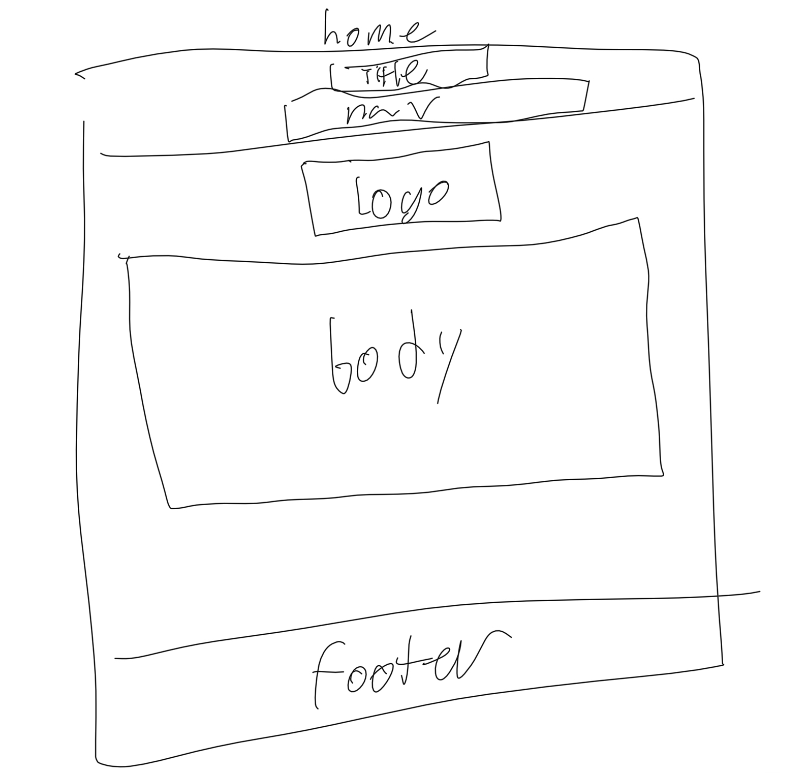
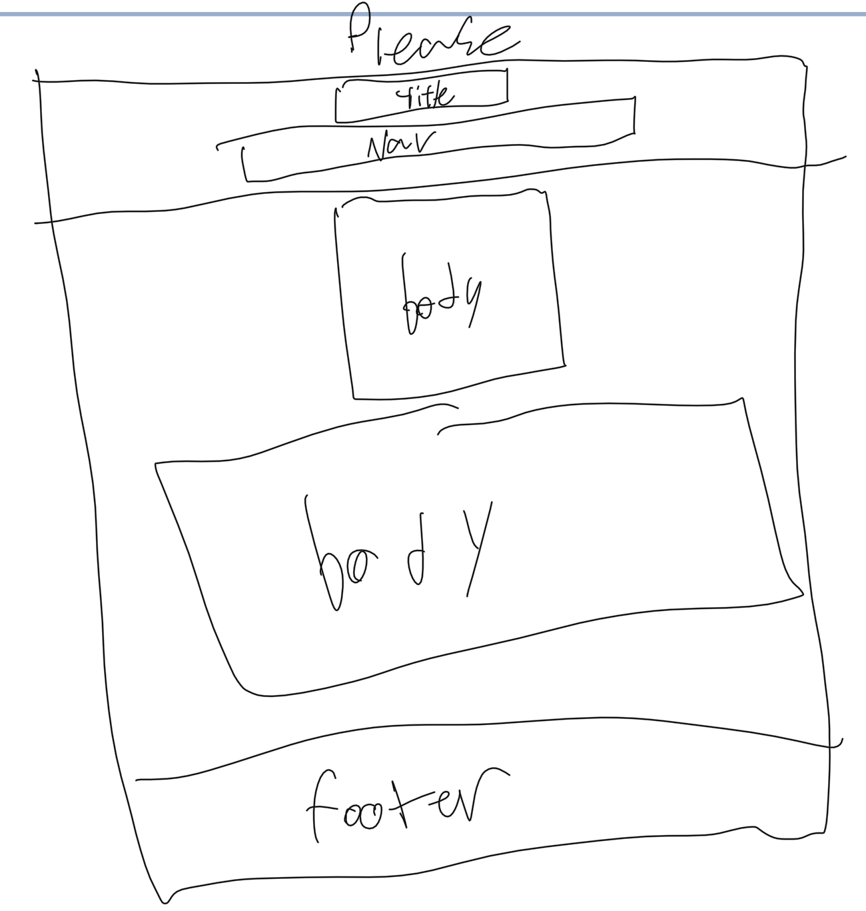
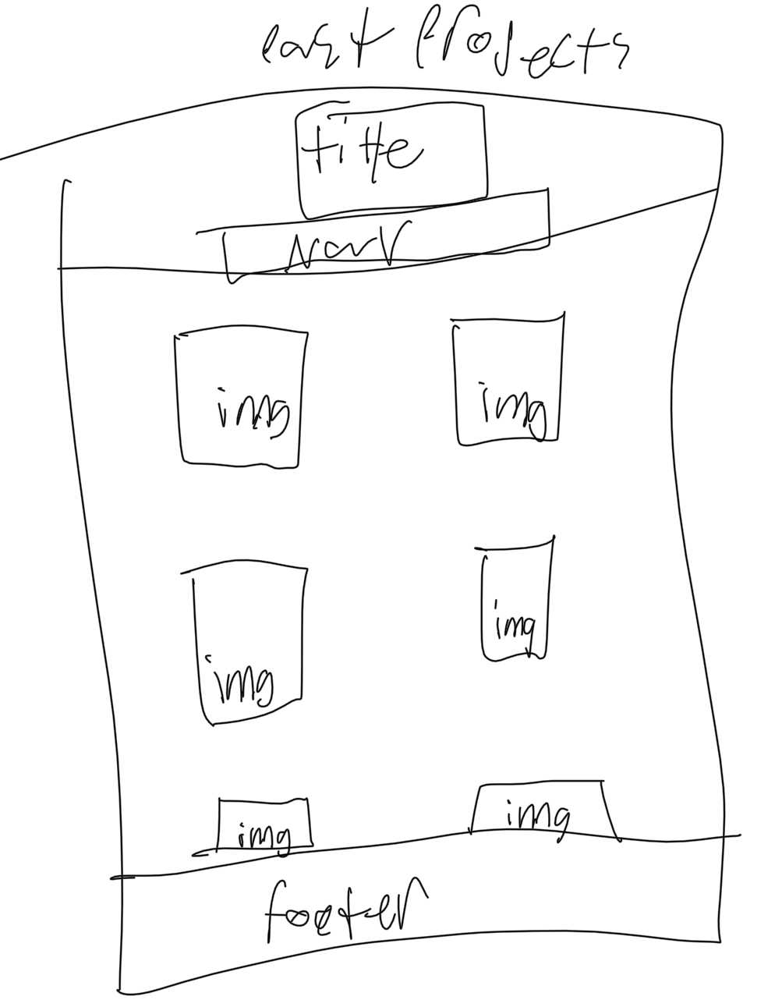

Overview
Purpose
To present a well-structured, highly persuasive, and slightly humorous argument as to why I should receive an A in this course. Spoiler: It’s because of my impeccable HTML skills and sheer willpower.
Audience
The esteemed Brother Willdin and/or most gracious TA Amy grading this, classmates who may be inspired, and future generations who will look upon this project with awe for all eternity.
Branding
Website Logo
Style Guide
Color Palette
| Primary | Secondary | Accent 1 | Accent 2 |
|---|---|---|---|
Typography
Heading Font: IM Fell French Canon SC
Paragraph Font: Lato, Helvetica, sans-serif
Normal paragraph example
Quality HTML deserves an equally quality font. That’s why I’ve carefully selected this one. Not random at all.
Colored paragraph example
This paragraph is in an desert color tone.
Navigation
Site Map
Content
Home page
Welcome to my persuasive argument page as to why my A is inevitable.
Although I acknowledge that I stopped attending class midway through the semester and didn’t study as I should have, I still believe I deserve an A because of my potential and willingness to take responsibility for my actions. I’ve reflected on the choices I made and how they affected my performance, and I’ve realized the importance of accountability and discipline. Even though I didn’t fully engage this time, I’ve gained a better understanding of what it takes to succeed, which is a valuable lesson in itself.
Images for the Home page
Please
Brother Willden, I hope you and Ami can consider not just what I did, but what I’m capable of. I know this isn’t the most traditional argument for an A, but I believe that growth, self-awareness, and honesty should count for something. This experience, while imperfect, has motivated me to do better in the future and not take opportunities like this for granted. I know I could have succeeded in this class had I applied myself, and I plan to carry that lesson into every class moving forward.
Lastly, while my actions didn’t reflect it, I do respect the time, effort, and energy that both you and Ami put into teaching. I regret missing out on more of it. If there’s any way I can make up for my lack of participation, I’m open to it. I understand that an A is a high grade, but I also believe this experience has pushed me to grow in ways that grades don’t always capture. I’m not just asking for a grade—I’m asking for a chance to learn from this and keep pushing myself forward.
This page is a simple yet powerful expression of my request for an A.
Past Projects
Here, I display my past projects to further fortify my case for an A.
Wireframes
Home
A stunning wireframe showing how greatness is structured.
Please
A minimalist wireframe filled with the word "please" and a brif paragraph begging. Showing my desire for an A
Past Projects
A wireframe showcasing my project gallery.
